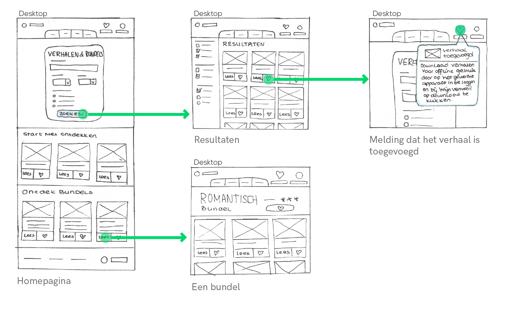
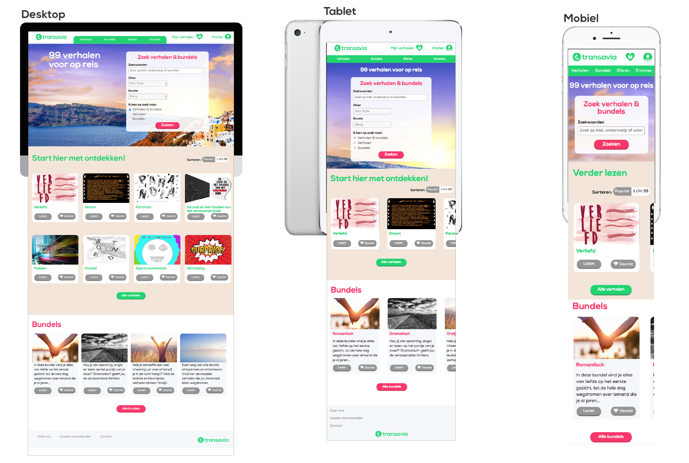
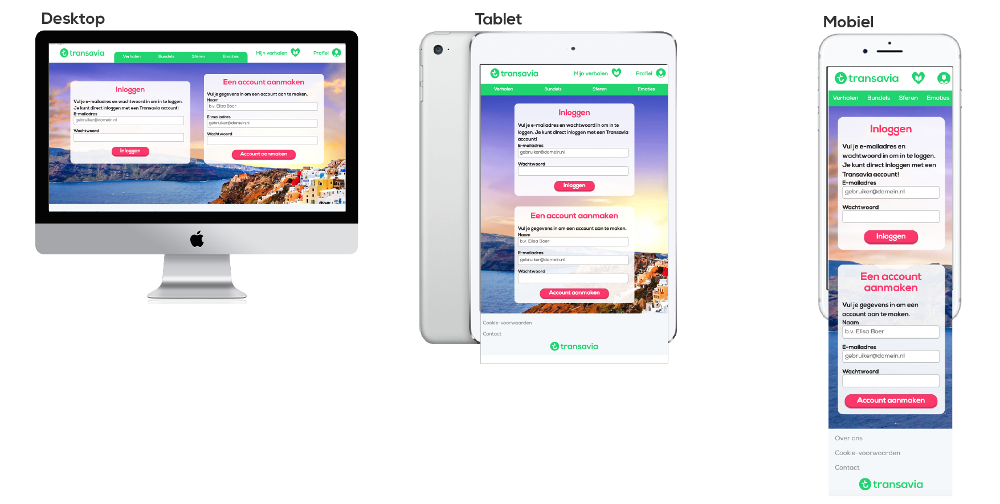

Vliegtuigmaatschappij Transavia wil een verhalenwebsite aanbieden aan zijn klanten. Voor, tijdens en na de reis kunnen klanten online verhalen lezen op een device naar keuze. Dit doen ze tijdens het wachten, even tussendoor in de rij en tijdens een lange vlucht, vaart of rit. Via een overzichtspagina moeten reizigers 99 verhalen kunnen opzoeken en lezen.
De website wordt responsive en past binnen de huisstijl van de opdrachtgever. Bezoekers kunnen verhalen vinden en lezen, en misschien opslaan. De 99 verhalen worden uniek vormgegeven in een stijl die aansluit bij de tone-of-voice van het verhaal. Het wordt een seamless multidevice experience waarbij gebruikers op elk moment van de reis verhalen kan lezen of bekijken.
De gebruiker wil tijdens de reis verhalen kunnen lezen;
De gebruiker wil aanbevolen en/of verassende resultaten aangeboden krijgen;
De gebruiker wil input geven zodat anderen beter leuke verhalen kunnen vinden
Ondersteun verschillende gebruikers en verschillende gebruikerscontexten.
BUSINESS GOALS:
Versterk de merkbeleving van de opdrachtgever in de periode vóór de reis, tijdens en na de reis. De reisorganisatie wil niet langer als een vervoerder bekend staan, maar als een distributeur van ervaringen.
CUSTOMER JOURNEY MAPPING
Om een goed beeld te krijgen van de gehele ervaring van de gebruiker zijn we begonnen met Customer Journey Map. Hieruit kwam naar voren dat gebruikers meerdere devices gebruiken tijdens de reis: laptop, tablet en mobiel. Welk device wordt gebruikt is afhankelijk van de context. Een ander belangrijk punt is dat als je tijdens de reis wilt lezen je er vooraf aan moet denken dat je de verhalen download.
Ook moesten we nadenken over de Informatie Architectuur van de site. Omdat het uiteenlopende verhalen zijn kun je geen standaard A-Z indeling gebruiken. Mij viel al snel op dat er in elk verhaal wel een sfeer of emotie centraal staat: positief of negatief, blij of verdrietig. Op deze manier heb ik mijn navigatie bovenaan de pagina dan ook ingedeeld.
MULTI DEVICE WIREFLOW

De eerste lofi uitwerkingen van de verhalensite zijn gemaakt in geschetste wireflows. Hierbij heb ik de belangrijkste functies van de site uitgewerkt. Bovenstaande afbeelding weergeeft bijvoobeeld hoe een gebruiker nieuwe verhalen kan zoeken, vinden en opslaan voor zijn reis. De melding legt uit hoe de verhalen gedownload kunnen worden.
De gebruiker wilt de verhalen tijdens het vliegen op de tablet lezen. Als de gebruiker inlogt op zijn tablet, krijgt hij een melding en kan hij de verhalen downloaden naar zijn tablet. De verhalen zijn daarna ook offline beschikbaar.
RESPONSIVE SITE
Homepagina

Op de homepagina kunnen gebruikers direct zoeken naar verhalen. Ook kunen ze verhalen ontdekken door verder naar beneden te scrollen. Ik merkte na de customer journey map dat de kans dat gebruikers op mobiel uitgebreid gaan zoeken niet groot is. Daarom is het zoekveld daar minder uitgebreid. Verder kunnen gebruikers via de homepagina bundels bekijken. Dit zijn pakketen van boeken in een bepaald genre.Ze kunnen de bundel als geheel opslaan en downloaden.
Loginpagina

Via de loginpagina kunnen gebruikers op elk device inloggen met een Transavia account. Als ze nog geen account hebben kunnen ze hier direct een Transavia account aan maken.
Verhaalpagina
Op de verhaalpagina krijgen gebruikers informatie over het verhaal: titel, waardering, toevoegen aan favorieten. Door te scrollen kunnen ze door het hele verhaal heen. Op het eind kunnen ze het verhaal een beoordeling geven.
MICROINTERACTIES
#1 - Verhalen en/of bundels downloaden.
Als gebruikers verhalen en/of bundels willen downloaden gaan ze naar 'Mijn verhalen'(hartje in de menubalk). Hier kunnen ze alle verhalen tegelijk downloaden of op de downloadknop van een specifiek verhaal klikken om dat verhaal te downloaden. Als de download compleet is verschijnt er een cijfer van hoeveel verhalen/bundels er zijn gedownload bij de link naar alle 'Downloads'.
#2 - Een verhaal toevoegen aan een specifieke lijst.
Als gebruikers een verhaal favoriet maken voegen ze het verhaal toe aan 'Mijn verhalen'. Wanneer ze een verhaal favoriet maken kunnen ze hem ook toevoegen aan een specifieke map binnen 'Mijn verhalen', daarbij kunnen ze zelf nieuwe mappen aanmaken. Als het verhaal is toegevoegd krijgen ze hiervan een melding.
Naar aanleiding van mijn gekozen verhaal heb ik beeldonderzoek gedaan: een clichebeeld, kleur- en vormbeeld en typografisch beeld. Deze beelden dienen als inspiratie voor mijn vormgegeven verhaal.
In het verhaal viel mij op dat hoofdpersoon constant bang is voor de wereld om zich heen. Dat ze hem zullen veroordelen. Hij is bang en erg chaotisch. De vormgeving moet uitstrallen dat de hoofpersoon op elk moment uit elkaar zou kunnen vallen doordat hij zich verliest in zijn paniek.
Interactie van de tekst
Wanneer je door het verhaal scrolt, beweegt de tekst. Zo valt de titel langzaam uit elkaar in veel kleine stukjes. Deze losse stukjes blijven aan de zijkant van het verhaal terwijl je verder leest.
De tekst het midden van het scherm is altijd 100%, erboven en eronder zwakt de tekst af naar een lager percentage. Dit geeft je gebruiker altijd focal point van de tekst die hij op dat moment aan het lezen is. Als de gebruiker verder wil lezen kan hij verder scrollen.
Het uiteenvallen van een van de subtitels in het verhaal.